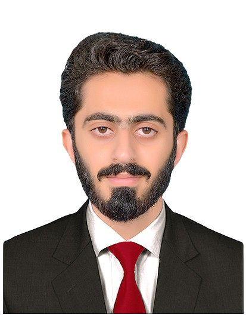

I teach and research in Corpus Linguistics, Computational Linguistics, and Morphology across universities in Pakistan, and I am now looking for a PhD position to grow further in Computational Linguistics.

I am based in Faisalabad, Pakistan, and have been teaching and researching across Corpus Linguistics, Computational Linguistics, and Morphology at several Pakistani universities. My M.Phil. thesis at Government College University, Faisalabad worked on developing a Punjabi synset through an expansion approach from the English WordNet, and my time as a Research Assistant under the HEC-NRPU project involved helping build linguistic tools, including taggers, analyzers, and stemmers, for Shahmukhi Punjabi.
I am looking for a PhD position in Computational Linguistics, to build on this experience and keep learning through further research on digital language resources for under-resourced South Asian languages.
Development and evaluation of computational part-of-speech tagging resources for Shahmukhi Punjabi.
Lexical resource development through expansion from the English WordNet.
Computational analysis of Punjabi word formation and morphological structure.
Computational dependency analysis and syntactic processing for Shahmukhi Punjabi.